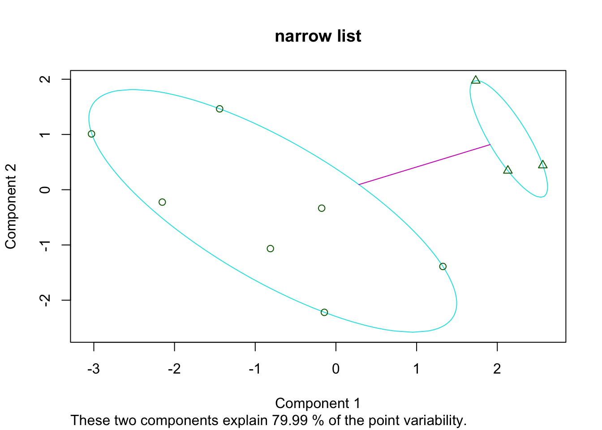
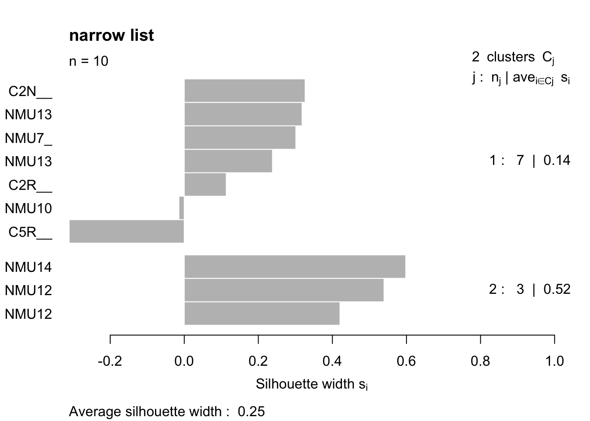
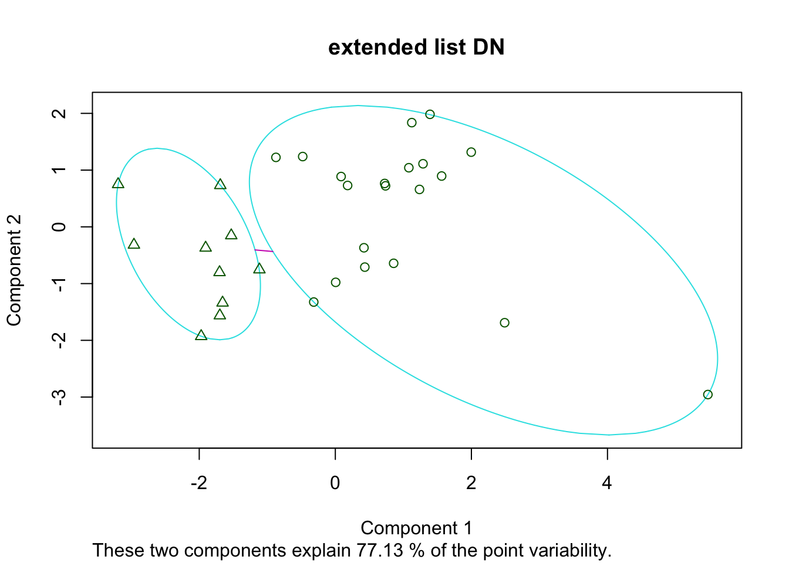

Chapter 10 ER/Pgr Subtyping
In this section, we will look at whether there are differences in rat subtype by:
- creating a list of specific markers of interest
- applying PAM clsutering (partitioning around medoids)
As the DN samples do have keratin expression, we will also try to determine the subtypes in these samples too.
In the below analyses, we will conduct this subtyping as follows:
- progression specific epithelial cohort
- characterisation specific epithelial cohort
- dn specific cohort (progression)
10.1 Gene List
We will assess clustering using two different lists. A. is a more comprehensive list containing epithelial, mesenchymal markers and proliferation markers, B. has a more narrow list of subtype specific markers
- ‘Ar’, ‘Cd24’, ‘Cdh1’, ‘Foxa1’, ‘Gata3’, ‘Krt8’, ‘Krt18’, ‘Krt5’, ‘Vim’, ‘Erbb2’, ‘Esr1’, ‘Pgr’, ‘Mki67’, ‘Pcna’
- ‘Ar’, ‘Foxa1’, ‘Gata3’, ‘Erbb2’, ‘Esr1’, ‘Pgr’
10.2 Progression cohort
We will be using variance stabilised counts in this section.
Firstly, we will look at the progression cohort. Note that the overlap between the two gene-sets are similar, and the heatmap is row-scaled.
Markers1=c('Ar', 'Cd24', 'Cdh1', 'Foxa1', 'Gata3', 'Krt8', 'Krt18', 'Krt5', 'Vim', 'Erbb2', 'Esr1', 'Pgr', 'Mki67', 'Pcna')
Markers2=c('Ar', 'Foxa1', 'Gata3', 'Erbb2', 'Esr1', 'Pgr')
# Progression cohort
Ax1a=assay(vstEp)[ match(Markers1, rownames(assay(vstEp))),]
Ax2a=assay(vstEp)[ match(Markers2, rownames(assay(vstEp))),]
Pam1=pam(t(Ax1a), 2)
Pam2=pam(t(Ax2a), 2)
par(mfrow=c(2,2))
plot(Pam1, main="List A, progression cohort")
plot(Pam2, main="List B, progression cohort")
ColA=Pam1$clustering
ColA=ifelse(ColA==1, "Basal", "Lum")
ColB=Pam2$clustering
ColB=ifelse(ColB==1, "Basal", "Lum")The following shows the heatmaps using these list, using average distances in the hclustering approaches: firstly, using the longer list
#colnames(Ax1a)=infoTableFinal$TumorIDnew[match(colnames(Ax1a), rownames(infoTableFinal))]
#hclust.ave <- function(x) hclust(x, method="average")
ax1=heatmap.2(Ax1a, trace="none", hclustfun = hclust.ave, col=brewer.pal(11, "RdBu")[11:1], scale="row", main="narrow list", ColSideColors = c("red", "blue")[factor(ColA)])
Figure 10.1: HR clustering
and now using the shorter list
ax1=heatmap.2(Ax2a, trace="none", hclustfun = hclust.ave, col=brewer.pal(11, "RdBu")[11:1], scale="row", main="narrow list", ColSideColors = c("red", "blue")[factor(ColB)])10.3 Charcterisation cohort
We can perform a similar analysis to the characterisation cohort: (and save to file)
c2=infoTableFinal$SampleID[which(infoTableFinal$Fraction=="Ep" & infoTableFinal$Cohort!="Progression")]
Ax1=assay(vsd)[ match(Markers1, rownames(assay(vsd))), match(c2, colnames(vsd))]
Ax2=assay(vsd)[ match(Markers2, rownames(assay(vsd))), match(c2, colnames(vsd))]
Pam3=pam(t(Ax1), 2)
Pam4=pam(t(Ax2), 2)
#plot(Pam3)
plot(Pam4, main="narrow list")
Ax1b=scale(t(Ax1))
#plot(Pam3, "extended list")
ColC=Pam3$clustering
ColC=ifelse(ColC==2, "Basal", "Lum")
ColD=Pam4$clustering
ColD=ifelse(ColD==1, "Basal", "Lum")
colnames(Ax1)=infoTableFinal$TumorIDnew[match(rownames(Ax1b), rownames(infoTableFinal))]
heatmap.2((Ax1), trace="none", hclustfun = hclust.ave, col=brewer.pal(11, "RdBu")[11:1], scale="row", ColSideColors = c("red", "blue")[factor(ColC)])colnames(Ax2)=infoTableFinal$TumorIDnew[match(rownames(Ax1b), rownames(infoTableFinal))]
heatmap.2((Ax2), trace="none", hclustfun = hclust.ave, col=brewer.pal(11, "RdBu")[11:1], scale="row", ColSideColors = c("red", "blue")[factor(ColD)])Figure 10.2: HR status in characterisation cohort
DT::datatable(Ax2, rownames=F, class='cell-border stripe',
extensions="Buttons", options=list(dom="Bfrtip", buttons=c('csv', 'excel')))Figure 10.2: HR status in characterisation cohort
10.4 DN samples
DN samples: note there is variability in DN expression of PR, Foxa1, Esr1, Ar, Erbb2 and Gata3 shows fairly stable expression values
Ax2=assay(vsdLimmaDN)[ match(Markers2, rownames(assay(vsdLimmaDN))),]
Pam5=pam(t(Ax2), 2)
plot(Pam5, main="extended list DN")
ColE=Pam5$clustering
ColE=ifelse(ColE==1, "Basal", "Lum")
ColE=gsub("Basal", "red", ColE)
ColE=gsub("Lum", "blue", ColE)
#pdf("~/Desktop/5X-DN-samples-HR-status.pdf", width=6, height=5)
colnames(Ax2)=infoTableFinal$TumorIDnew[match(colnames(Ax2), rownames(infoTableFinal))]
heatmap.2(Ax2, col=brewer.pal(11, "RdBu")[11:1], ColSideColors =ColE,scale="row", main="DN samples vsd marker list1", trace="none", hclustfun = hclust.ave)10.5 Comparison with staining
We can collate these different scores and assess whether there are similarities with PgR and ER staining:
## match to infoTable here
# Contingency Tables
par(mfrow=c(1,2))
a1=table(Cdata$HR_status, Cdata$PgR.IF)
ContTable(a1[ ,-2], "Pgr Expr", T, "Pgr IF", "compressed subtype")
# Contingency Tables
a1=table(Cdata$HR_status, Cdata$ER.IF)
ContTable(a1[ ,-2], "ER Expr", T, "ER IF", "compressed subtype")
10.6 Summary of expression markers for each subtype/cell fraction
We can pull out the main markers of interest: ER, PGR, Erbb2 and Ki67 (or PCNA). We also compare these expression distribution of these markers to CD45, DN and Ep overall:
Notes:
- Pgr highest in luminal samples
- Esr1 dynamic range is lower
- Ar is higher in basal samples
- Pcna is higher in Basal
gList=c("Esr1", "Pgr", "Erbb2", "Ar", "Pcna", "Mki67", "Acta2", "Epcam", "Krt18")
summ4=table(infoTableFinal$Fraction)
#pdf("~/Desktop/FigS3-plot-gene-of-interest-average-expression.pdf", height=8, width=8)
par(mfrow=c(2,3))
for (i in gList){
boxplot(allTPMFinal[i, ]~infoTableFinal$Fraction, main=i, names=paste(names(summ4)," N=",summ4, sep=""), las=2, ylab=i, xlab="")
}